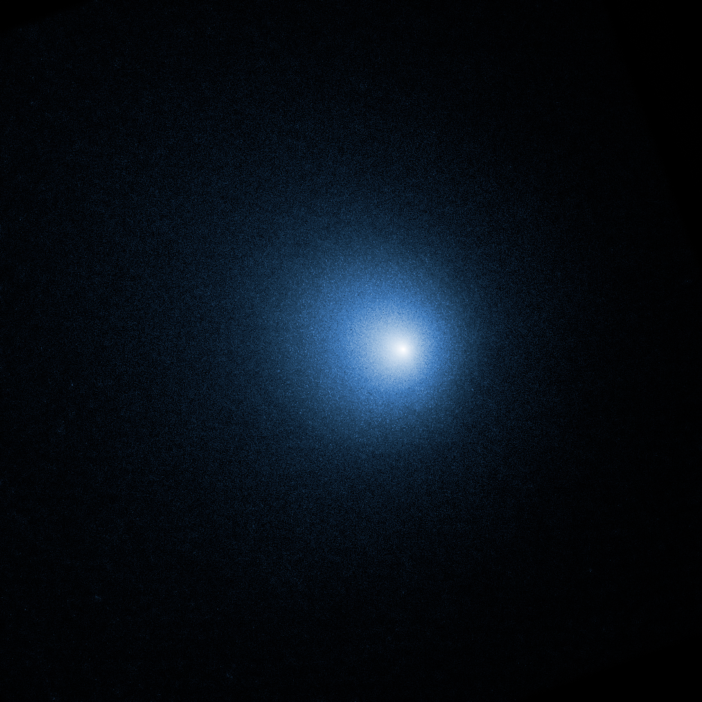

Our Mission
Hydrogen cyanide (HCN), acetylene (C2H2), ammonia (NH3), amidogen (NH2), hydroxide (OH), and water (H2O) are some of the more important parent volatiles found in cometary nuclei in our solar system. The favorable 2018 apparition of 46P/Wirtanen allowed a detailed observation of these parent volatiles, providing a solid addition for future comparison observations. We targeted Wirtanen with the iSHELL spectrograph at NASA's Infrared Telescope Facility to observe orders 171 and 179 to collect data on the abundances of HCN, C2H2, NH3, NH2, OH, and H2O. These abundances and ratios, in conjunction with other observations and data reduction might indicate that Wirtanen is a "hyperactive" comet, producing more water than average for its size.

Some Backstory
Some 4.5 billion years ago, a cloud of gas and dust, remnants from the deaths of earlier generations of stars, coalesced to become our sun. The residual gas and dust orbiting in this stellar nursery formed the planets, moons, asteroids, and comets. The icy bodies of these comets collected the bulk of their mass from the protoplanetary disk during the formative days of our solar system, and so we expect the composition of those comets which have survived countless orbits around our sun to reflect the compositions and processes experienced at the time when the cometary nucleus formed.†
Two main groups of comets currently orbit the sun, with one group, the Oort cloud comets (OOCs), having formed in the far reaches of the solar system and the other, the Jupiter-family comets (JFCs), having formed in the Kuiper belt, much closer to the sun compared to the OOCs. By analyzing cometary nucleus ices, we should be able to get a glimpse into the composition of the very early solar system from two distinct distances from its center. Of the two families of comets, JFCs have a much shorter orbital period, and as such JFCs can provide us with greater opportunities to analyze the same comet repeatedly, offering a glimpse into the short-term evolution of comets as they make their frequent passes of the sun.
Comet 46P/Wirtanen is a JFC of interest and was the original target of the Rosetta Lander mission until the mission was postponed and a new JFC target, comet 67P/Churyumov-Gerasimenko, was selected.‡ Wirtanen again became the subject of increased scientific inquiry in 2018 when the comet passed quite close to Earth. The close approach of Wirtanen to Earth in December of 2018 allowed a rare opportunity to collect valuable data about the composition, distribution, and abundances of parent volatiles and product species.
Observation Results
The abundances of the various molecules (HCN, H2O, OH, C2H2, NH3, and NH2) will help to place Wirtanen among the various JFCs, creating a more robust dataset of the comets of the inner solar system, likely indicating a higher than average activity in its nucleus. The favorable approach of Wirtanen in 2018 allowed for many high-quality pre-perihelion and post-perihelion observations. The data compiled in this paper will combine with data collected from the other Wirtanen observations in December 2018 as well as January and February 2019 to provide a dynamic look of a comet in motion in our solar system.